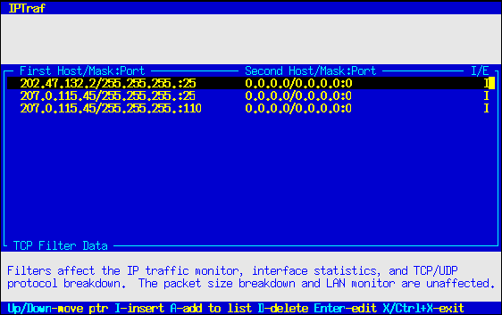

Filters
Filters are used to control the information displayed by the IP traffic monitor, general and detailed interface statistics, and TCP/UDP statistical breakdown. You may want to view statistics only on particular traffic, so you must restrict the information displayed. The filters also apply to logging activity.
 | Note |
|---|---|
The filters affect the IP traffic monitor, the general and detailed interface statistics, and the TCP/UDP service monitor. The packet size breakdown and LAN station monitor are not affected. |
The IPTraf filter management system is accessible through the Filters... submenu.
TCP Filters
The Filters/TCP... main menu option allows you to define a set of parameters that determine what TCP traffic to pass to the monitors. Selecting this option pops up another menu with the tasks used to define and apply custom TCP filters.
Defining a New Filter
A freshly installed program will have no filters defined, so before anything else, you will have to define a filter. You can do this by selecting the Define new filter... option.
Selecting this option displays a box asking you to enter a short description of the filter you are going to define. Just enter any text that clearly identifies the nature of the filter.
Press Enter when you're done with that box. As an alternative, you can also press Ctrl+X to cancel the operation. Following that will be another dialog box asking you for the source and target IP addresses, wildcard masks, and service ports.
You can enter addresses of individual hosts, networks, or a catch-all address. The nature of the address will be determined by the wildcard mask.
You'll notice two sets of fields. You fill these out with the information about your source and targets. Strictly speaking, because packets alone don't provide information about which side initiated the connection (except for SYN packets), you may think of these as "endpoint" fields rather than as strict source/destination fields. That means you can enter information about the "from" side in the first set of fields, and the "to" side in the second set, or vice versa. It doesn't matter, each filter entry will match packets flowing in the reverse direction.
Fill out the IP address of the hosts or networks in the first field marked Host name/IP Address. Enter it in standard dotted- decimal notation. When done, press Tab to move to the Wildcard mask field. The wildcard mask is similar but not exactly identical to the standard IP subnet masks. The wildcard mask is used to determine which bits to ignore when processing the filter. In most cases, it will work very closely like a subnet mask. Place ones (1) under the bits you want the filter to recognize, and keep zeros (0) under the bits you want the filter to ignore. For example:
To recognize the host 207.0.115.44
To recognize all hosts belonging to network 202.47.132.x
To recognize all hosts with any address:
The IP address/wildcard mask mechanism of the display filter doesn't recognize IP address class. It uses a simple bit- pattern matching algorithm.
The wildcard mask also does not have to end on a byte boundary; you may mask right into a byte itself. For example, 255.255.255.224 masks 27 bits (255 is 11111111, 224 is 11100000 in binary).
Leaving the wildcard mask fields blank or storing invalid data in them causes the filter to recognize the entries as 255.255.255.255.
IPTraf also accepts host names in place of the IP addresses. IPTraf will resolve the host name when the filter is loaded. When the filter is interpreted, the wildcard mask will also be applied. This can be useful in cases where a single host name may resolve to several IP addresses.
 | Tip |
|---|---|
See the Linux Network Administrator's Guide if you need more information on IP addresses and subnet masking. |
The Port fields should contain a port number of the service you may be interested in. Leave it at 0 to let the filter ignore it. You will most likely be interested in target ports rather than source ports (which are usually unpredictable anyway, perhaps with the exception of FTP data).
Fill out the second set of fields with the parameters of the opposite end of the connection. As previously mentioned, you may place either set of parameters in either set of fields. By default, the second set of parameters are preset to 0.0.0.0, 0.0.0.0, 0. Just Backspace or Delete over them and replace them if needed.
The last field is marked Include/Exclude. This field allows you to decide whether to include or exclude matching packets from the display. Setting this field to I causes the filter to display matching entries, while setting it to E causes the filter to suppress the display of matching entries. This field is set to I by default.
Press Enter to accept all parameters when done. The parameters will be accepted and you'll be presented with another blank form. You can enter as many sets of parameters as you wish. Press Ctrl+X at a blank form when done.
Examples
To see all traffic to/from host 202.47.132.1 from/to 207.0.115.44, regardless of TCP port
| Host name/IP Address | 202.47.132.2 | 207.0.115.44 |
| Wildcard mask | 255.255.255.255 | 255.255.255.255 |
| Port | 0 | 0 |
| Include/Exclude | I |
To see all traffic from/to host 207.0.115.44 to/from all hosts on network 202.47.132.x
| Host name/IP Address | 207.0.115.44 | 202.47.132.0 |
| Wildcard mask | 255.255.255.255 | 255.255.255.0 |
| Port | 0 | 0 |
| Include/Exclude | I |
To see all Web traffic, regardless of source or destination
To see all mail (SMTP) traffic to a single host (202.47.132.2) from anywhere
To see traffic to/from host sunsite.unc.edu from/to cebu.mozcom.com
| Host name/IP Address | sunsite.unc.edu | cebu.mozcom.com |
| Wildcard mask | 255.255.255.255 | 255.255.255.255 |
| Port | 0 | 0 |
| Include/Exclude | I |
To omit display of traffic to/from 140.66.5.x from/to anywhere
In all the above examples, you could have interchanged the first and second sets of IP addresses, wildcard masks, and port values; they wouldn't have made any difference. That's why they're better referred to as "first" and "second" rather than "source" and "target".
You can enter as many parameters as you wish. All of them will be interpreted when the filter is processed.
Excluding Certain Sites
Filters follow an "implicit no-display" policy, that is, only explicitly defined sites will be displayed, everything else is not. This is similar to the access-list policy "whatever is not explicitly permitted is denied". If you want to show all traffic to/from everywhere, except certain places, you can specify the sites you wish to exclude, mark them with E in the Include/Exclude field, and define a general catch-all entry with source address 0.0.0.0, mask 0.0.0.0, port 0, and destination 0.0.0.0, mask 0.0.0.0, port 0, tagged with an I in the Include/Exclude field as the last entry.
For example:
To see all traffic except all SMTP, Web, and traffic from/to 207.0.115.44
| Host name/IP address | 0.0.0.0 | 0.0.0.0 |
| Wildcard mask | 0.0.0.0 | 0.0.0.0 |
| Port | 25 | 0 |
| Include/Exclude | E | |
| Host name/IP address | 0.0.0.0 | 0.0.0.0 |
| Wildcard mask | 0.0.0.0 | 0.0.0.0 |
| Port | 80 | 0 |
| Include/Exclude | E | |
| Host name/IP address | 207.0.115.44 | 0.0.0.0 |
| Wildcard mask | 255.255.255.255 | 0.0.0.0 |
| Port | 0 | 0 |
| Include/Exclude | E | |
| Host name/IP address | 0.0.0.0 | 0.0.0.0 |
| Wildcard mask | 0.0.0.0 | 0.0.0.0 |
| Port | 0 | 0 |
| Include/Exclude | I |
| Tip |
|---|---|
To omit all TCP from the display, define a filter with a single entry, with a source of 0.0.0.0 mask 0.0.0.0 port 0, and a destination of 0.0.0.0 mask 0.0.0.0 port 0, with the Include/Exclude field marked E (exclude). Then apply this filter. |
Applying a Filter
The above steps only add the filter to a defined list. To actually apply the filter, you must select Apply filter... from the menu. You will be presented with a list of filters you already defined. Select the one you want to apply, and press Enter.
The applied filter stays in effect over exits and restarts of the IPTraf program until it is detached.
Editing a Defined Filter
Select Edit filter... to modify an existing filter. Once you select this option, you will be presented with the list of defined filters. Select the filter you want to edit by moving the selection bar and press Enter.
Edit the description if you wish. Pressing Ctrl+X at this point will abort the operation, and the filter will remain unmodified. Press Enter to accept any changes to the filter description.

Figure 5. The filter parameters selection screen. Selecting an entry displays that set for editing
After pressing Enter, you will see the filter's rules. To edit an existing filter rule, move the selection bar to the desired entry and press Enter. A prefilled dialog box will appear. Edit its contents as desired. Press Enter to accept the changes or Ctrl+X to discard.
You can add a new filter rule by pressing I to insert at the selection bar's current position. When you press I, you will be presented with a dialog box asking you to enter the new rule data. Pressing A results in a similar operation, except the rule will be appended as the last entry in the rule list.
Pressing D deletes the currently pointed entry.
Press X or Ctrl+X to end the edit and save the changes.
| Note |
|---|---|
If you're editing the currently applied filter, you will need to re-apply the filter for the changes to take effect. |
| Note |
|---|---|
Be aware that the filter process the rules in order. In other words, if a packet matches more than one rule, only the first matching rule is followed. |
Deleting a Defined Filter
Select Delete filter... from the menu to remove a filter from the list. Just move the selection bar to the filter you want to delete, and press Enter.
Detaching a Filter
The Detach filter option deactivates the filter currently in use. Selecting this option causes all TCP traffic to be passed to the monitors.
When you're done with the menu, just select the Exit menu option.